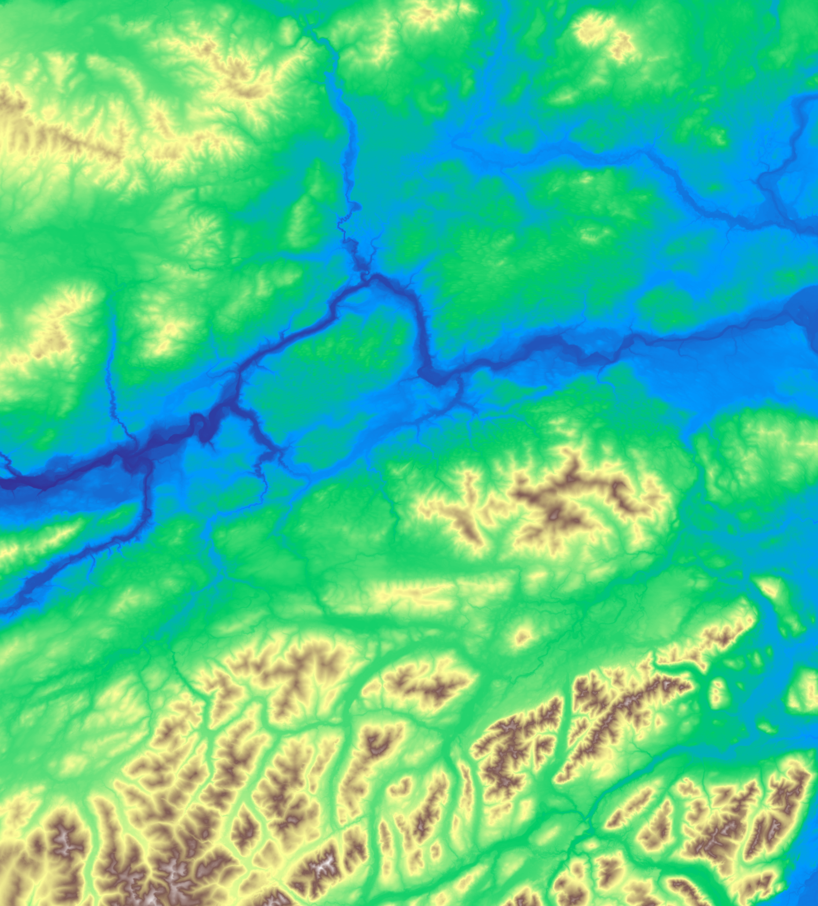
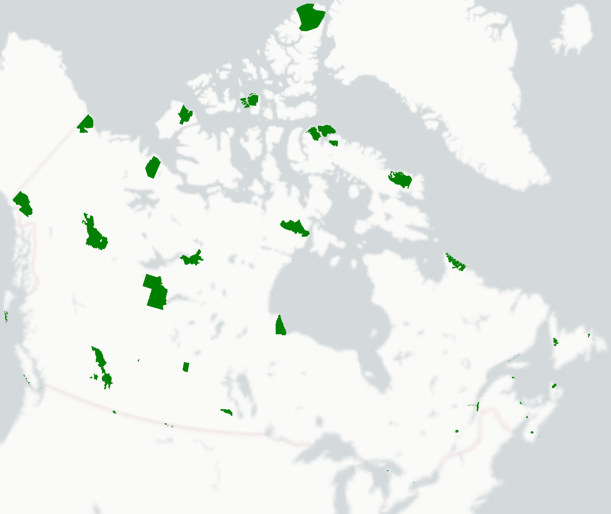

This site contains introductory code and data for the GEM530 term projects. References relevant for each project are provided at the bottom of the page.
| Contributors | Affiliations |
|---|---|
| Dr. Suborna Ahmed | Forest Biometrics, Forest Resources Management, Faculty of Forestry, University of British Columbia |
| Harry Seely | Integrated Remote Sensing Studio, Forest Resources Management, Faculty of Forestry, University of British Columbia |
| Gurmandeep Bal | Computer Science, University of British Columbia |
The project choices are listed below and are described in more detailed throughout this page.
Please visit the following link to rank your project choices in order of preference. Projects will be allocated to the groups that respond earliest based their ranking.
All project data can be downloaded from the GEM530 Discussion Teams page under:
Files>Documents>General>gem530_term_project_data
The data directory is structured as follows, with one folder per project. Each file is described in more detail below.
/data
├── cutblocks_topo/
│ ├── aoi.gpkg
│ ├── cutblocks.gpkg
│ └── dem.tif
├── parks_sar/
│ ├── CAN-SAR_database.csv
│ └── parks.gpkg
└── petawawa_species/
├── als_metrics.tif
├── plot_data.xlsx
├── plot_locations.gpkg
├── prf_boundary.gpkg
└── sp_codes.csv
uv --helpuv sync
The province of British Columbia (BC) has a wide range of forest conditions, with many different species and forest types. This ecological variability is in large part due to the topographic diversity across BC, with many mountainous regions, deep river valleys, and alpine areas. Consequently, a large amount of the harvested forest areas in BC are located on steep slopes.
A loss of forest cover on a steep slope can result in soil instability, since roots are no longer anchoring the soil. Under the correct circumstances, this instability can result in landslides, which can damage infrastructure and in some cases be fatal. A recent study by Hancock and Wlodarczyk2025) examined the effect of the 2021 atmospheric river that occurred in BC on the frequency of geohazards (e.g., landslides, erosion, etc.) in harvested areas. The study found that geohazards occurred more frequently in cutblocks. Here we define a "cutblock" using the BC Forest Practices Board definition as "[a] specific area of land with defined boundaries, authorized for harvest".
Cutblocks, specifically clearcuts, can also result in increased risk of flooding since forest cover helps mediates the flow of water through the landscape. For example, a recent study by UBC Forestry professor Dr. Younes Alila and other researchers found that flooding is 18 times more likely in clear cut harvested areas (Pham et al., 2025).
The BC Ministry of Forests has requested your consulting company to perform a historic analysis of the range of topographic conditions found across cutblocks in the province. This preliminary study aims to shed light on what kind of topographic conditions have experienced harvesting, and lead to future work that incorporates geohazard and flooding data. Your company has been asked specifically to analyze trends regarding slope and aspect, as these are both noted as key variables based on recent research. The Ministry also requests that the analysis consult the relevant existing literature to incorporate other potentially useful topographic indicators for assessing to geohazard and flood risk in cutblocks. Finally, the Ministry has requested the analysis be limited to an area of interest (AOI) in central BC as this is a preliminary study.
This analysis includes the following datasets which are described below in more detail: 1) area of interest polygon; 2) historic cutblocks in BC; 3) digital elevation model. For more information about each dataset, consult the original dataset source.

One of the primary purposes of parks is to protect species from negative anthropogenic influences such as development and natural resource extraction. Parks are especially critical for species at risk (SAR) that may have specific habitat requirements. In Canada, SAR are defined legally under the Species at Risk Act (SARA) and are hosted on a publicly available registry (Canada, 2018).
Recent research has demonstrated how participatory monitoring datasets such as eBird and iNaturalist can help inform protected area management at the global scale (Mandeville et al., 2023). Specifically, these data can be used to assess the presence of SAR within protected areas (Cordier et al., 2025).
Parks Canada has contacted your consulting company with a contract job to analyze the occurrence of SAR within Canadian National Parks. The Agency is interested in understanding the occurrence of SAR across National Parks to better understand the conservation value of the parks and identify species that may have underrepresented habitat provided by existing parks.
Parks Canada (hereby the Agency) has requested your company make use of the Global Biodiversity Information Facility (GBIF), which combines global biodiversity datasets including citizen science data from eBird and iNaturalist in addition to observations from the scientific community such as fossil records. Parks Canada has requested the analysis be performed using the GBIF Python Package (pygbif). Ultimately, the goal of the Agency is to develop a dashboard website that summarizes SAR occurrences across all National parks that can be updated via the GBIF database.
This analysis includes the following datasets which are described below in more detail: 1) national park polygons; 2) species at risk registry; 3) GBIF database.
Information about dominant tree species in a given forest stand is critical for effective forest management. Tree species vary in commercial, ecological, and cultural values, making them key for developing management goals.
Tree species can be modeled across the landscape using remote sensing since trees have distinct spectral signatures as a result of their unique photosynthetic pigments and leaf traits. However, modelling species with LiDAR data at a finer spatial scale can be more challenging since most LiDAR data only captures a single wavelength (typically near infrared, but can be different depending on the sensor).
Research has used conventional LiDAR to model tree dominant tree species in various forest ecosystems. For example, Räty et al. (2016) used ALS data in Finland to model dominant tree species with the downstream goal of enhancing timber volume estimation accuracy. Similarly, a study in the Quebec boreal forest found that five dominant tree species have distinct LiDAR vertical distributions that can be used to distinguish between species (Racine et al., 2021).
The Ontario Ministry of Natural Resources (hereby the Ministry) is interested in making us of recently acquired airborne laser scanning (ALS) data to develop an enhanced forest inventory (EFI). An EFI is a new iteration of forest inventory that replaces historic sample plot and air photo interpretation with remote sensing based modelling to derive more accurate forest attribute estimates (White et al., 2016). One key attribute of an EFI is dominant species. The Ministry has contracted your consulting company to develop an ALS model that predicts dominant tree species using an area-based approach. The Ministry has requested that you use the Petawawa Research Forest (PRF) as a case study. This will ultimately be used to contribute to the province wide EFI. As a secondary item, the Ministry is also interested whether ALS is sufficient on its own to model species accurately, or whether multispectral data is required in addition to ALS to be used within a data fusion framework.
This analysis includes the following datasets which are described below in more detail: 1) Petawawa Research Forest (PRF) boundary; 2) PRF sample plot locations; 3) PRF sample plot data; 4) Ontario tree species codes; 5) ALS metrics.
This project was developed with support from the UBC Open Educational Resources (OER) Excellence and Impact Award, which provided funding to advance the creation of openly available teaching and learning materials.
We also gratefully acknowledge the UBC Work Learn Program, which supported student collaborators whose contributions were central to the development of this resource.